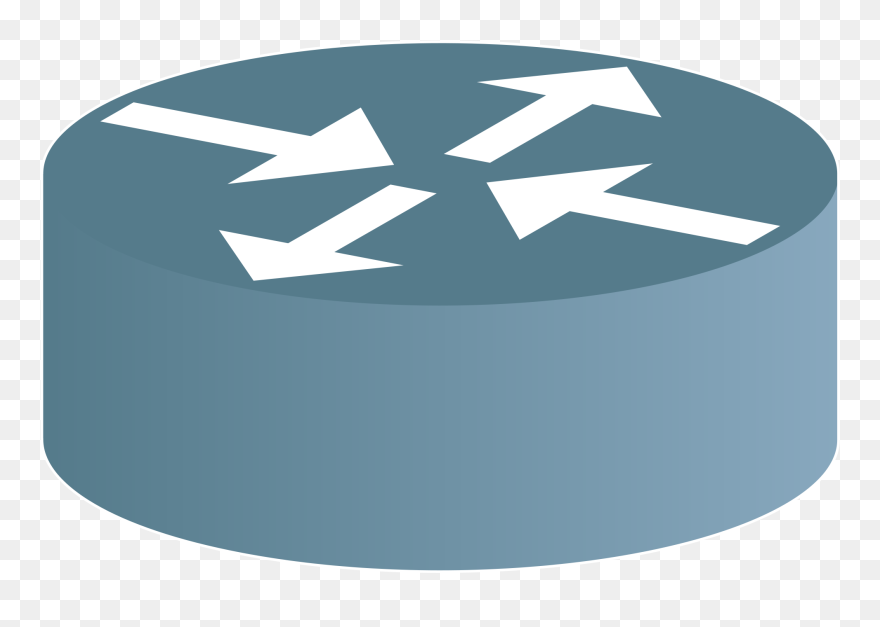

7 years of experience
Driving licence
Ops: docker(+compose), kubernetes, vagrant / libvirt, ansible, terraform, packer
build: Maven, Gradle, Git, Makefile, Shell
Dev: Spring (Core, Batch, Boot, MVC, Security), JUnit, Hibernate, Zuul
Web: Java / Kotlin, Kafka, elasticsearch, Apache Storm. ES6, Typescript, Angular 2+, Jest. Language: Go, Python, C/C++
Os: Linux, advanced LVM concept, software Raid
Professional Experiences
Java Developer
Zenika - DECATHLON
Since July 2024
-
Streaming team,
- Kafka Cluster
- KConnect Connector: debezium, s3
- Application Java spring consumer / producer
-
Main achievement
- Develop state-of-the-art Java application, based on spring kafka consumer and producer
- Contribute onto the topic, avro schema and ACL creation tools
- Implement feature on the crypto library with custom serialize and deserializer
Technical environment: Java 21, String (Core, Kafka), Maven, Clean Architecture, Kafka, Aiven, Kconnect, Schema registry
Java Developer
Zenika - DECATHLON
May 2022 - July 2024
-
Team Member sport, Sport activity collecting and routing plus users OAuth2 connection management
- HUB application, kafka streaming
- Collect user activities from partners API like FITBIT, Strava, Coros ...
- Micro-service oriented application
-
Main achievement
- Java development to support compatibility with new partners
- Exposed a sport activity stream to other internal teams
- Maintain and develop fluxcd manifest
- Deploy Java application service thanks to helm descriptor into kubernetes cluster
Technical environment: Java 17, Spring (Core, Boot, Security, Kafka), Maven, JUnit, Architecture Hexagonale, Postgresql, Kubernetes, Helm, Github, OAuth
Advice mission, Kafka setup
Zenika - PeopleSpheres
March 2022 - April 2022
-
POC Kafka architecture Event driven, conseil sur des scenarii RH.
- POC application related to RH software
- Software architecture and good practice about micro-service implementation
- Advice mission
-
Main achievement
- Scaffold Spring kafka Java application
- Setup confluent cloud, like topic creation and ACL definition
- Release pipeline and deployment with github action
- Deploy Google Cloud Run application with terraform descriptor
Technical environment: Java 17, Spring (Cloud, Boot), Maven, Kafka, Github, GCP, Terraform, Cloud Run, Springdoc-openapi
Devops: Terraform - Azure / Java - kotlin
Zenika - Sodiaal
October 2021 - February 2022
-
Dolmen project, payroll software / milk producer self billing.
- Dolmen referential application
- Business dataset for payslip generation
- Internal Project for external customer with 9 colleagues
-
Main achievement
- Kotlin development of import functionality
- Development of referential microservice with kotlin
- CI and CD pipeline on Gitlab
- Azure deployment and provisioning thank to terraform
Technical environment: Java 17, Spring (Core, Boot, Security, MVC, JPA), Maven, JUnit, Testcontainers, Postgresql, Kotlin, Gitlab, Azure, Terraform
Devops: Ansible / Go / Java - Kotlin
Zenika - Enedis
November 2020 - September 2021
-
ZSEv2 project, private cloud infrastructure with Openstack for Linky project.
- Miscellaneous Ansible deployment
- FOOGaaS application (Firewall Orienté Objet Generique as a Service)
- Network Flux management between Openstack projects as code
- Cloud service team with 9 colleagues, ~40 people on the project
-
Main achievement
- LDAP + JWT token authentication
- Enhance test coverage with testify library
- Jenkins and Ansible deployment task
Technical environment: Go 1.15, Gin HTTP framework, Testify, go-swagger, Docker, Ansible, Jenkins, Bitbucket
Devops: Ansible / Java - Kotlin
Zenika - Enedis
February 2019 - October 2020
-
ZSEv2 project, private cloud infrastructure with Openstack for Linky projects.
- CMDB application (Configuration Management Database Dynamic)
- Automatic and historized storage of the current cloud infrastructure state
- Customizable and extendable application (store any kind of events: openstack, aws etc ...)
- Team of 3 persons part of a ~40 colleague project
-
Main achievements:
- Deployment of On Premise elasticsearch, kafka, zookeeper cluster
- Automation with Infra As Code and continuous deployment
- Linux administration
- Java / Kotlin API development
- Integration test with testcontainers
Technical environment: Java 11, Spring (Core, Boot, Security, MVC, Sluth), Maven, JUnit, Testcontainers, Json, Rest, Elasticsearch, Kafka, Kotlin, GIT, Angular 8, Jest, Docker-compose, Ansible, Jenkins, Bitbucket
Développeur FullStack
Sully Group - France Agrimer
Avril 2018 - Fevrier 2019
-
Céré'obs project, grain management software
- Data weeklies reporting application
- Talend job's data processing
- 9 person team
-
Assignment and main achievements:
- Setup development base
- Setup liquibase script
- POC development following viability study
- Application screen development (Fullstack)
- Front-end and back-end tests
- Contribute to project bug fix
Technical environment: Java 8, JEE, Spring (Core, Boot, Security, MVC, Zuul), Maven, JUnit, Json, Rest, oracle, Lombok, GIT, JWT, Angular 6, Jest, Docker-compose, Liquibase
Développeur Java/JS
Sully Group - Réseau de Transport d'Electricité
March 2017 - April 2018
-
EasyGeo project
- cartographic application of french electrical network
- Import, Drawing, Print, Measures, GIS content management.
- Display in geomatics layers of the different electrical networks
- Team of 11 persons
- Agile project with 3/4 weeks by sprint
-
Assignment and main achievements:
- Front-end code structuration and organisation (javascript module / JQuery)
- FullStack development of various feature (Import, Search in geometric space, Print)
- Performance benchmark with Scala Gatling
- Spring batch development and setup / scheduled tasks
üß™ Personal Projects:
Ops
1 - Setup and maintain a three physical host infrastructure:
Host 1: Traefik, OpenVPN, Nginx, Nextcloud, Mongodb, nfs provisioner (Master node kubernetes The Hard Way)
Host 2: Gitea, docker registry, ssh debian
Host 3: Nginx, postgresql, php-fpm
2 - Provisioning libvirt domain with terraform
Dev
Self made linux container in c language thanks to namespace and pivot root
DNS resolution tools http and encoding/decoding wireformat
Slack bot alerting commands with golang
C++ development of cli password manager cli with aes cipher
üìö School career
2015 – 2018: Master Computer Science: University Claude Bernard Lyon 1
2014 - 2015: Licence Computer Science: University Claude Bernard Lyon 1
Hobbies
üíª Technical awareness on many topics
üé• Movies
üêß Linux
üõ°Ô∏è Security NDH, GreHack
Languages
üá´üá∑ French
üá¨üáß English
Certifications
 Cisco CCNA Academic 1/2
${CV_VERSION}